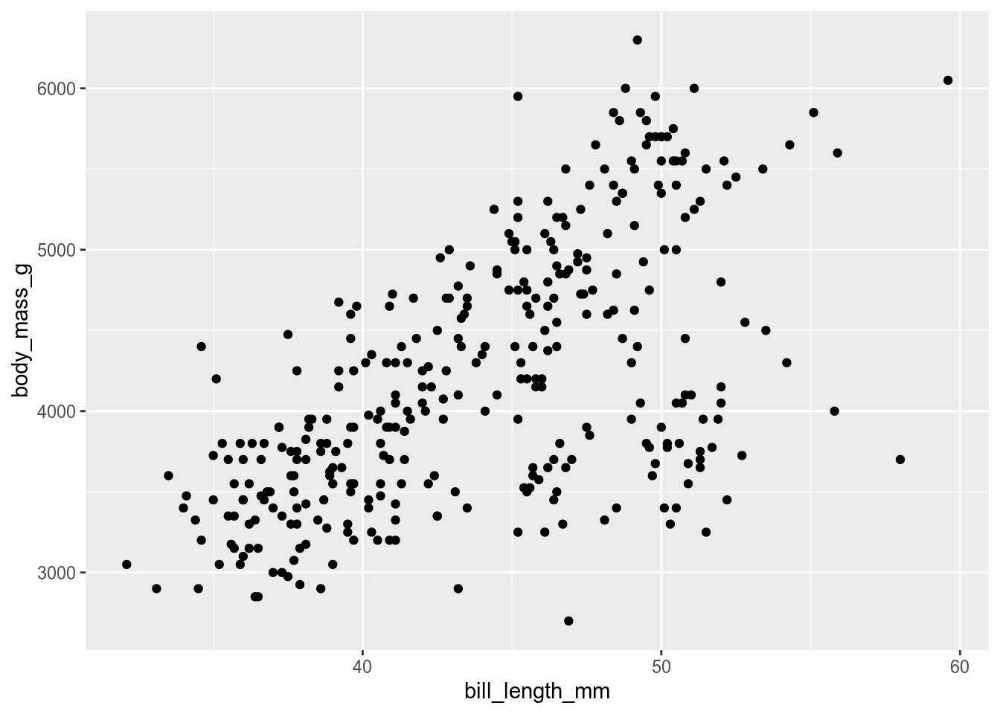

usethis::use_testthat()4 Package Contents
4.1 Basic workflow
- Write tests (Section 4.2)
- Write functions (Section 4.3) and documentation (Section 4.4)
- Check package (Section 4.7)
- Fix errors goto 3
- Test drive with
devtools::load_all() - Build and install (Section 4.8)
Because there are usually lots of errors to fix, it is sensible to build the package slowly, testing with Check frequently.
4.2 Tests
You need to write tests for your package to ensure your functions do what they are supposed. They protect you against breaking your package when you edit your code. Tests are run when the package is checked
You can, ideally should, write tests before you write your functions. We can use the testthat package for the tests.
Set up the testing infrastructure with
Now set up a test file for one or more related functions with use_test().
usethis::use_test(name = "import")This will create and open a file called test-import.R which looks like
test_that("multiplication works", {
expect_equal(2 * 2, 4)
})The first argument of test_that() is a description, second argument is an expression which contains the test. More complex tests might need some additional set-up code in the expression. There are several expect_*() functions to test different aspects of the function, including that errors and warnings are thrown as expected. Each test_that() call can test multiple expectations. You can have multiple test_that() calls per file.
Look for examples of tests on GitHub if you need inspiration.
Functions are much easier to test the functions do one job. This is also best practice when writing functions. For example, if you were writing a package to import, process, and plot logger data, you would make at least three functions to do this, not one function that does everything.
4.3 Functions
Functions are made with the keyword function, can have one or more arguments separated by commas, and needs assigning to a name.
my_function <- function(arg1 = 1, arg2){
arg1 * arg2
}
my_function(3, 4)Functions need to be saved in R/. Related functions can be saved in the same file.
4.3.1 Well behaved functions
Try not to alter the state of the users R session. Don’t include calls to library() or require() in functions (see Section 4.4.1). If you need to change the state, then revert it with when the function finishes. You can do this with withr::defer(). This is better behaved than the base R equivalent on.exit(). Even if the function throws an error, the state of options will be reverted to its original state.
4.3.2 Data validation - expect the unexpected.
If you are going to release your package, you need to try to make it idiot proof. Assume users will make mistakes with their data input. Use code to validate that the data are correct, or else throw an error. if statements and stop() are useful here.
my_function <- function(arg1 = 1, arg2){
if (!is.numeric(arg1) || !is.numeric(arg2)) {
stop("Arguments arg1 and arg2 must be numeric")
}
arg1 * arg2
}
my_function(3, "4")Error in my_function(3, "4"): Arguments arg1 and arg2 must be numeric4.3.3 S3 classes in R
When you use a generic function in R such as plot(), print(), autoplot() or summary(), what happens is that the class of the object in determined and dispatched to the appropriate function, which will have the name of the generic followed by the name of the class, separated by a dot.
So a call to plot() with an object of class cca will be dispatched to plot.cca.
You can find out the class of an object with class()
The class of an object can be set with class().
my_function <- function(){
result <- complex_logic()
class(result) <- "my_class"
result
}If the object already has a class and you want to keep it, you need something like
To make a print() or plot() method for my_class, we simply make a function called print.my_class or plot.my_class. The method will be declared automatically when the documentation (Section 4.4) is made.
Going further with classes
- Make your own generics
- Use the more formal S4 or R6 class systems
4.3.4 Ellipses …
Ellipses can be used in two ways when writing functions.
The first is to pass unknown arguments to a second function (e.g., plot.cca()).
If we make a plot.my_class() function we can use the ellipses so we don’t need to specify all the possible arguments in plot.
plot.my_class <- function(obj, ...){
#logic to prepare data for plotting
x <- obj$x
y <-obj$y
plot(x, y, ...)
}Now all of arguments to plot.default() can be used.
The second way to use ellipses is when there are a variable number of arguments. We can capture the ... using list(), and then process it further.
dot_to_list <- function(...){
list(...)
}
dot_to_list(1, 2, "c")[[1]]
[1] 1
[[2]]
[1] 2
[[3]]
[1] "c"
4.3.5 Using dplyr, ggplot2 etc
Tidyverse packages such as dplyr and ggplot2 which use Non-Standard Evaluation (NSE) are great for using in a script but a little challenging to use in functions.
We cannot just do something like this as we get an error
my_select <- function(data, col){
select(data, col)
}
my_select(penguins, col = species)Error in `select()`:
! object 'species' not foundOne solution is to use the curly-curly notation
#select
my_select2 <- function(data, col){
select(data, {{col}})
}
my_select2(penguins, col = species)# A tibble: 344 × 1
species
<fct>
1 Adelie
2 Adelie
3 Adelie
4 Adelie
5 Adelie
6 Adelie
7 Adelie
8 Adelie
9 Adelie
10 Adelie
# … with 334 more rows# filter
my_filter <- function(data, col, `%test%`, value){
filter(data, {{col}} %test% value)
}
my_filter(penguins, col = species, `%test%` = `==`, value = "Adelie")# A tibble: 152 × 8
species island bill_length_mm bill_depth_mm flipper_length_mm body_mass_g
<fct> <fct> <dbl> <dbl> <int> <int>
1 Adelie Torgersen 39.1 18.7 181 3750
2 Adelie Torgersen 39.5 17.4 186 3800
3 Adelie Torgersen 40.3 18 195 3250
4 Adelie Torgersen NA NA NA NA
5 Adelie Torgersen 36.7 19.3 193 3450
6 Adelie Torgersen 39.3 20.6 190 3650
7 Adelie Torgersen 38.9 17.8 181 3625
8 Adelie Torgersen 39.2 19.6 195 4675
9 Adelie Torgersen 34.1 18.1 193 3475
10 Adelie Torgersen 42 20.2 190 4250
# … with 142 more rows, and 2 more variables: sex <fct>, year <int>#mutate Note the := operator.
my_mutate <- function(data, col1, col2, sum_col){
mutate(data, {{sum_col}} := {{col1}} + {{col2}})
}
my_mutate(penguins, bill_length_mm, bill_depth_mm, sum_col = bill)# A tibble: 344 × 9
species island bill_length_mm bill_depth_mm flipper_length_mm body_mass_g
<fct> <fct> <dbl> <dbl> <int> <int>
1 Adelie Torgersen 39.1 18.7 181 3750
2 Adelie Torgersen 39.5 17.4 186 3800
3 Adelie Torgersen 40.3 18 195 3250
4 Adelie Torgersen NA NA NA NA
5 Adelie Torgersen 36.7 19.3 193 3450
6 Adelie Torgersen 39.3 20.6 190 3650
7 Adelie Torgersen 38.9 17.8 181 3625
8 Adelie Torgersen 39.2 19.6 195 4675
9 Adelie Torgersen 34.1 18.1 193 3475
10 Adelie Torgersen 42 20.2 190 4250
# … with 334 more rows, and 3 more variables: sex <fct>, year <int>, bill <dbl>#ggplot
my_plot <- function(data, x, y){
ggplot(data, aes(x = {{x}}, y = {{y}})) +
geom_point()
}
my_plot(penguins, x = bill_length_mm, y = body_mass_g)Warning: Removed 2 rows containing missing values (geom_point).
Another is to have the arguments as strings and use the .data pronoun from rlang (don’t forget to import rlang (see Section 4.4.1).
my_select3 <- function(data, col){
select(data, .data[[col]])
}
my_select3(penguins, col = "species")# A tibble: 344 × 1
species
<fct>
1 Adelie
2 Adelie
3 Adelie
4 Adelie
5 Adelie
6 Adelie
7 Adelie
8 Adelie
9 Adelie
10 Adelie
# … with 334 more rowsNSE can also be a problem for functions that don’t take column names as arguments.
process_penguin_type_data <- function(data){
data %>%
group_by(species) %>%
summarise(bill = mean(bill_length_mm))
} The next function should work, but will generate a note in the checking stage. as the check does not recognise or.
> checking R code for possible problems ... NOTE
process_penguin_type_data: no visible binding for global variable
‘species’
process_penguin_type_data: no visible binding for global variable
‘bill_length_mm’
Undefined global functions or variables:
bill_length_mm speciesTo fix this, either declare these variables as global with this line added to the file (outside the function).
utils::globalVariables(c('bill_length_mm', 'species'))Or, perhaps better, use the .data pronoun.
process_penguin_type_data <- function(data){
data %>%
group_by(.data$species) %>%
summarise(bill = mean(.data$bill_length_mm))
} 4.4 Documentation with Roxygen2
The documentation for the package lives in man/ in .Rd files. The files are written in a LaTeX like language, that is quite hard to get to right. Fortunately, the roxygen2 package takes most of the pain away as the format is much simpler. Also, some parts of the documentation are automatically generated by inspecting the code, and it is easier to keep the documentation and code in sync because the are in the same file.
The roxygen2 comments sit above the function, and start with #' to distinguish them from ordinary comments.
The first sentence of the roxygen becomes the title of the help file. Then we can use roxygen tags for the rest of the documentation. Roxygen tags all start with an @. Once you type this, RStudio gives you suggestions.
@description One paragraph description of what the function does.
@param argument_name followed by a description of the argument All parameters must be documented.
@details All the gory details. Possibly several paragraphs (separate with a blank line).
@return A description of the object returned by the function (if any)
@examples Working examples which will be run when the package is tested. Examples should run relatively quickly or they become tedious. They need to use library() to load any packages needed other than the package being developed. Any packages loaded by library() need to be declared in the DESCRIPTION file (see Section 4.4.1)
You can use markdown to enhance the documentation, including links etc.
4.4.1 Importing and exporting functions
The roxygen comments are also where you import functions from other packages and mark your functions for export. This information will be written into the NAMESPACE file so you don’t have to (see the R package book for more information about this file).
If you want to use a function from any other package (except base) you need to add the dependency to the package to the DESCRIPTION file.
use_package("dplyr")
#use_dev_package("packageFromGithub")You can now use a function from dplyr with dplyr::mutate. This gets messy if you need to use lots of functions from a package. Then it is better to import them. We could use
#' @import dplyrto import all functions in the package, or
#' @importFrom dplyr %>%if we want to just import specific functions. This is safer as it minimises the risk of conflicts.
Forgetting to import functions or to declare the dependencies in the DESCRIPTION file are very common problems when checking the package, but the message is informative (@troubleshooting).
Export any of your functions that you want users to have access to by adding @export to the roxygen comments.
4.4.2 Generate the .Rd files
Convert the roxygen comments to .Rd files with
devtools::document() View the compiled help files by running
devtools::load_all()which simulates loading the package without having to install it properly. Then you can use ? as normal to get the help (links won’t work)
4.5 Data
Many packages include data, either because they are needed for examples, or because the aim of the package is to distribute a dataset (probably with some functions to access it).
Data are stored in data/ as .rda files and can be loaded into R with the data() function.
data("penguins", package = "palmerpenguins")The best way to add .rda files is to use the function use_data_raw() with the name of the dataset you want create.
use_data_raw(name = "dataset1")This will create data_raw/ and add a file called dataset1.R that looks like this.
## code to prepare `dataset1` dataset goes here
usethis::use_data(dataset1, overwrite = TRUE)Add the code needed to reproducibly create dataset1, perhaps importing and processing data files that you have copied into data-raw/.
When you run the entire script, the code will create dataset1.rda in data/.
4.5.1 Documenting data
Data in data/ need to be documented. Write the documentation for the data using roxygen2 and save it in R/. I usually call this file data.R and document all the datasets in it.
In my traitstrap package, one of the data objects is called trait. Here is the entry from R/data.R:
#' Trait data
#'
#' A dataset containing plant traits in control plots on Svalbard from PFCT4
#' TraitTrain course.
#'
#' @format A data frame with 53940 rows and 10 variables:
#' \describe{
#' \item{Taxon}{species name}
#' \item{Site}{site name}
#' \item{PlotID}{plot name}
#' \item{Trait}{trait name with unit}
#' \item{Value}{trait value}
#' }
#' @source \url{http://https://www.uib.no/en/rg/EECRG/114808/plant-functional-traits-course-4}
"trait"The first line gives the title followed by the desciption. The @format field lets you describe the data. The last line has the object name in quotes (note no #’ first).
4.6 Adding other files
R gets upset if there are files where they are not supposed to be in the R package. You cannot put extra files into the package root directory. The solution is to put extra files into subdirectories in inst/.
If you want to include raw data files because your package has functions to process them, they can go in inst/extdata/.
When the package is compiled, inst/ will be removed and extdata/ will be put into the package root directory. The path to the file can the be accessed with system.file().
path <- system.file("extdata", package = "readr")
list.files(path)Tutorials and other resources can also be put into suitable directories in inst/.
4.7 Checking
Now we are ready to check the package compiles correctly. The check function is slow (it checks many aspects of the package), so before running it, run some functions that check different aspects of the package.
# build the documentation
devtools::document()
# check the examples work
devtools::run_examples()
# check the tests work
devtools::test()After fixing any problems, check the entire package either with the Check button in the Build tab (in the same panel as the Environment tab), or with devtools::check(). They do exactly the same work, but the Check button leaves the console available.
Check is very thorough. It will almost certainly report errors, warnings or notes the first times you run it. Identify the problems, fix them and run check again.
Now use
devtools::load_all()and give your functions a test drive.
4.8 Build and install
When you are happy with your package, use the “Install and Restart” button in the build tab to install your package. Now you can load it with library() as you would any other package.